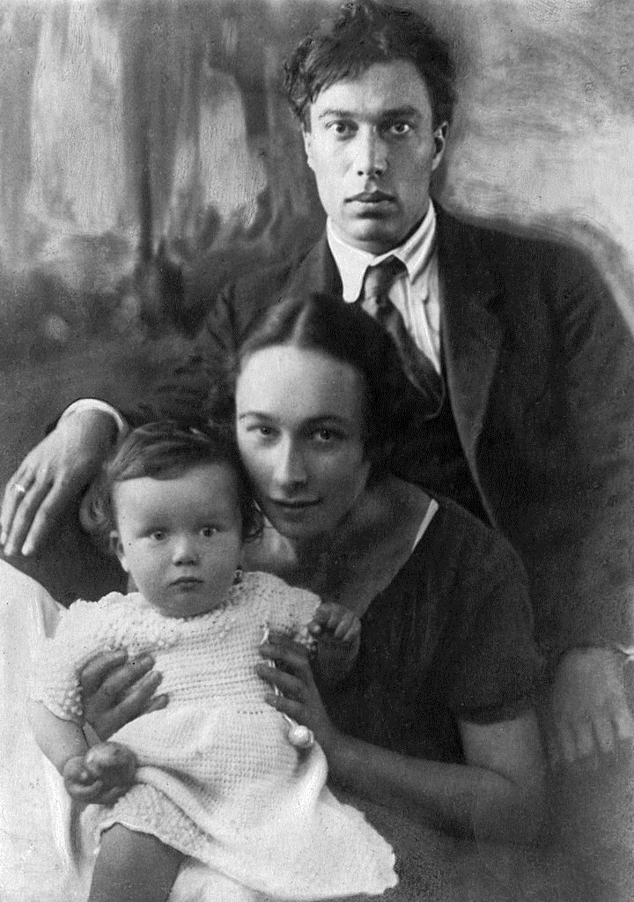
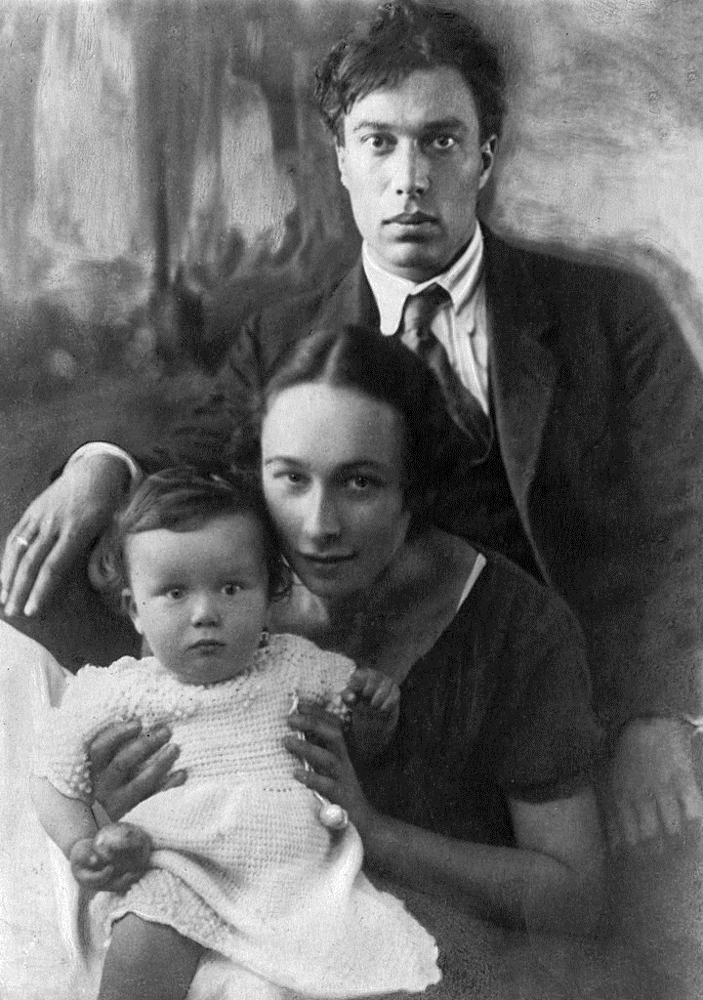

Биография
Родился в Москве в творческой еврейской[10] семье. Отец — художник, академик Петербургской Академии художеств Леонид Осипович (Исаак Иосифович) Пастернак и мать — пианистка Розалия Исидоровна Пастернак (урождённая Кауфман, 1868—1939), переехали в Москву из Одессы в 1889 году, за год до рождения сына. Борис появился на свет в доме на пересечении Оружейного переулка и Второй Тверской-Ямской улицы, где они поселились.В 1900 году не был принят в 5-ю московскую гимназию (ныне московская школа № 91[25]) из-за процентной нормы, но по предложению директора в 1901 году поступил сразу во второй класс. В 1903 году 6 (19) августа при падении с лошади сломал ногу и из-за неправильного срастания (лёгкая хромота, которую писатель скрывал, осталась на всю жизнь) был в дальнейшем освобождён от воинской повинности[26]. Позже уделил особое внимание этому эпизоду в стихотворении «Август» как пробудившему его творческие силы.
 

Летом 1912 года изучал философию в Марбургском университете в Германии у главы марбургской неокантианской школы профессора Германа Когена, который советовал ему продолжить карьеру философа в Германии. Тогда же сделал предложение Иде Высоцкой (дочери крупного чаеторговца Давида Высоцкого), но получил отказ (факт описан в стихотворении «Марбург» и автобиографической повести «Охранная грамота»). В 1912 году вместе с родителями и сёстрами посетил Венецию, что нашло отражение в его стихах того времени. Виделся в Германии с кузиной Ольгой Фрейденберг (дочерью литератора и изобретателя Моисея Фрейденберга). С ней его связывала многолетняя дружба и переписка. В 1912 году окончил Московский университет. За дипломом не явился. Диплом № 20974 сохранился в архиве Московского университета[31].